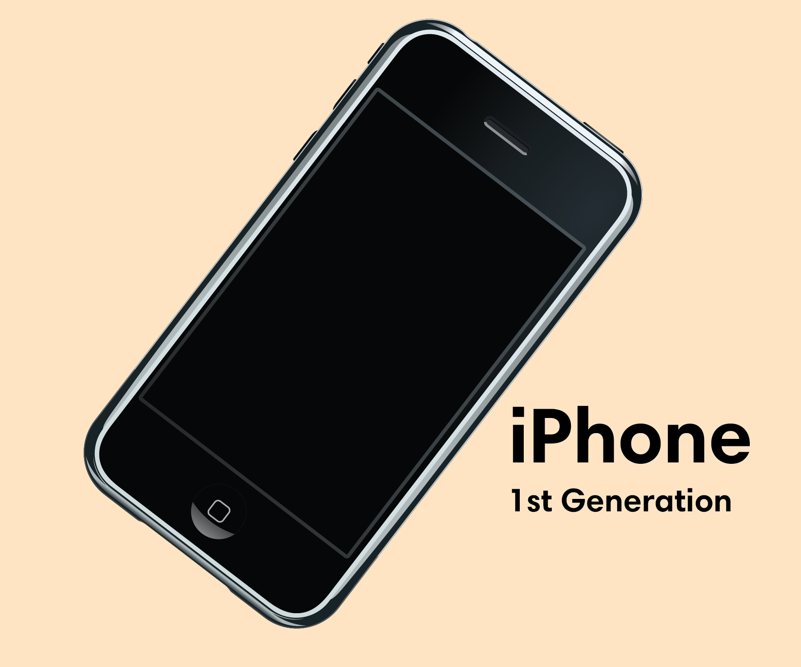

Why you must understand variance to improve your business
data analysis
Author
Joram Mutenge
Published
October 1, 2024
The business scenario

a revolutionary phone
Imagine you’re part of the team that launched the first iPhone with Steve Jobs in 2007. You want to measure the customer satisfaction of consumers who have used the demo version of the iPhone by testing how they like the features you have included in this revolutionary device. So you ask them to score their likeability of using the iPhone by focusing on five features.
NoteScore range 1 to 10
1 = I don’t like this feature.
10 = I really like this feature.
Suppose you ask five people and they each give a score for each of the five features of the iPhone you’ve presented to them. Below are the scores.
shape: (5, 2)
Feature
Score
str
list[i64]
"2MP Camera"
[7, 6, 7, 8, 7]
"Bluetooth"
[6, 5, 7, 7, 6]
"Browser"
[8, 9, 9, 9, 9]
"Touchscreen"
[8, 9, 8, 9, 8]
"Wifi"
[6, 5, 7, 4, 5]
To determine the potentiality of each feature for these customers, you have to know how these customer satisfaction scores vary. This leads to calculating the variance of these scores.
What is variance?
You can think of variance as the average of each score’s distance from the average (mean). It tells you how much the different scores vary or are spread out from the average. If the variance is large, it means the scores are spread out widely from the average. If it’s small, the scores are closer to the average.
It’s important to note that variance is measured in the square of the unit used. The farther the satisfaction score is from the average, the higher the volatility. This can suggest instability, unreliability, or inconsistency, depending on the type of data and how you’re analyzing it.
Let’s pick one feature, Bluetooth, and see how the scores compare to the average.
We can see that the largest variation is on the score of 5 with a -1.2 variation (not variance). This is even clearer when presented as a plot.
import plotly.graph_objects as gofrom plotly_customizations import customize_plotly_figurefrom pathlib import Path# Extract necessary datascores = bluetooth_df["Score"].to_list()mean_value = bluetooth_df["Mean"][0] # Mean is constant, so we take the first elementdeviations = bluetooth_df['Difference'].abs().to_list() # Absolute deviations for error bars# Create the scatter plot using Plotly with error barsfig = go.Figure()customize_plotly_figure(fig, f"{Path('../../')}/images/logo.png")# Add a scatter plot with error bars (no connecting lines)fig.add_trace(go.Scatter( x=list(range(1, len(scores) +1)), # Use index or range as x-axis y=scores, # Scores as y-axis mode='markers+text', # Markers and text text=[str(score) for score in scores], # Display score values next to dots textposition="middle right", # Position text to the right of the markers name='Scores', marker=dict(size=8, color='#0000FF'), error_y=dict( # Add error bars showing deviation from the meantype='data', array=deviations, visible=True, color='#0000FF' )))# Add a horizontal solid line for the meanfig.add_trace(go.Scatter( x=list(range(1, len(scores) +1)), # Use the same x-axis values y=[mean_value] *len(scores), # The mean is a horizontal line mode='lines+text', # Line and text))# Add titles and labelsfig.update_layout( title="<b>Customer satisfaction score variation<br>(Bluetooth)", title_font=dict(size=22), yaxis_title="Score", showlegend=False, # Remove the legend width=740, xaxis =dict( tickmode ='array', tickvals =list(range(1, len(scores) +1)), ticktext = ['Score 1', 'Score 2', 'Score 3', 'Score 4', 'Score 5'] ), annotations=[dict( xref='paper', x=1, y=6, xanchor='center', yanchor='bottom', text='Mean', # Escape double quotes within f-string showarrow=False, font=dict(size=13, color='red') # Apply font family )])fig.show(renderer="iframe")
Now let’s calculate the variance on the customer satisfaction scores for Bluetooth. Since the variance is the average of the variations for all Bluetooth scores, it will be the same, which in this case is 0.7.
The Bluetooth feature has a customer satisfaction score variance of 0.7, relative to a mean score of 6.2. This suggests that customer ratings for this feature tend to cluster around the average.
However, variance is not a good representation of what is going on because we’re using square units. To determine the potentiality that is a lot more representative, we need to calculate standard deviation.
What is standard deviation?
Standard deviation is simply the square root of the variance. It’s a measure of how much the scores deviate from the mean. So, if the standard deviation is large, there’s a lot of variability among the data points. If it’s small, the data points are more clustered around the mean. Standard deviation is more interpretable because it’s in the same units as the original data, making it easier to understand how spread out the data is.
The standard deviation on Bluetooth scores is 0.83, which means that most of the scores vary between -0.83 and +0.83 from the mean. Considering that the mean is 6.2, a standard deviation of 0.83 is not very large – in other words, it doesn’t change the mean score significantly. We can conclude that the customers have a consistence experience with the Bluetooth feature.
Now that we have a better understanding of our customers’ experience with the Bluetooth feature, let’s repeat the process for all the features, but this time we’ll go straight to the standard deviation because that’s the value we’re interested in.
The values in the table above show that the features Browser and Touchscreen have the lowest standard deviation (the scores don’t deviate much from the mean score). These features also have consistent and generally higher customer satisfaction scores. This suggests customers had a better experience with these two features as there is less variability in their scores. These are the features that must be highlighted to sell more iPhones!
Wifi has the largest standard deviation, and the scores are mostly low. Clearer, customers did not have a better experience with the Wifi feature. Thus, in the later versions of the phone, more resources should be put towards improving this feature.
TipDid you know?
In July 2023, an unopened, first edition model of the 2007 iPhone was sold at auction in the US for $190,372.80 This is about 400 times the original price.
Conclusion
Variance is a key concept in statistics that measures how spread out or varied the data is in a set. It’s important for analyzing information, understanding risks, and making smart choices in product management.
By properly calculating and understanding variance, you can better recognize trends in the data, spot areas that need improvement, and make more informed decisions.
Check out my Polars course to improve your data analysis skills.